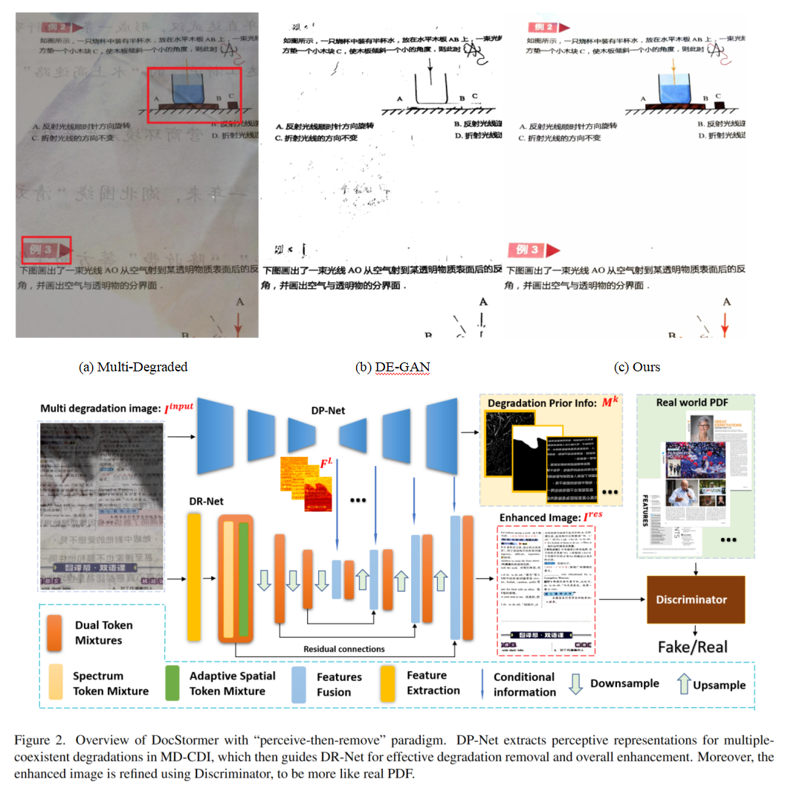

Chaowei Liu
Master Student at National University of Singapore
About Me
I am currently a master student at National University of Singapore, attending the Learning and Vision Lab, where I am advised by Prof. Xinchao Wang. Before that, I completed my bachelor degree at the School of EE, HARBIN INSTITUTE OF TECHNOLOGY, SHENZHEN. My research interests include Low-level vision, Graph Neural Network, Diffusion Model and LLM etc.
News
07/2023 - I am currently seeking suitable PhD and internship positions. If there are any appropriate opportunities, please feel free to drop me an email. I would greatly appreciate it!
10/2023 - Discover how to restore document images under various degradation conditions and transform them into a PDF-like quality. See our newest paper for more insights. DocStormer: Revitalizing Multi-Degraded Colored Document Images to Pristine PDF
05/2023 - Our team NUS-LV Bokeh attended the NTIRE 2023 Bokeh Effect Transformation Challenge, and we are proud to announce that we secured third place.
04/2023 - Customize your chatgpt for code tasks is now possible, see our newest paper the Feasibility of Specialized Ability Stealing for Large Language Code Models.
Projects
DocStormer: Revitalizing Multi-Degraded Colored Document Images to Pristine PDF
For capturing colored document images, e.g. posters and magazines, it is common that multiple degradations such as shadows, wrinkles, etc., are simultaneously introduced due to external factors. Restoring multi-degraded colored document images is a great challenge, yet overlooked, as most existing algorithms focus on enhancing color ignored document images via binarization. Thus, we propose DocStormer, a novel algorithm designed to restore multi-degraded colored documents to their potential pristine PDF.
CBTNet: a controllable bokeh transformation model
We have conducted significant work in the realm of computational photography on mobile devices. We have proposed CBTNET, a controllable bokeh transformation model. This model is designed to convert the bokeh effect of one lens to the effect of another lens, while preserving the sharpness of the foreground regions in the image.


Research on data augmentation strategy of graph neural network
We propose a new data augmentation strategy of graph neural network based on changing feature matrix. Achieve up to 7% absolute F1 performance improvements across architectures and datasets.

Publications
I am interested in Low-level vision, Graph Neural Network, Diffusion Model and LLM etc.
Conference Papers:
DocStormer: Revitalizing Multi-Degraded Colored Document Images to Pristine PDF
Chaowei Liu, Jichun Li, Yihua Teng, Chaoqun Wang, Nuo Xu, Jihao Wu, Dandan Tu
Arxiv | paper
On the Feasibility of Specialized Ability Extracting for Large Language Code Models
Zongjie Li, Chaozheng Wang, Pingchuan Ma, Chaowei Liu, Shuai Wang, Daoyuan Wu, Cuiyun Gao
ICSE 2024 CCF-A | paper
Challenge Reports:
Lens-to-Lens Bokeh Effect Transformation. NTIRE 2023 Challenge Report
CVPRWorkshop 2023 Third Place | paper
Awards
2022, Outstanding Graduates(10%).
2022, Outstanding Graduation Project(10%).
2020, First Prize in National College Students’ Innovation & Entrepreneurship Training Project.